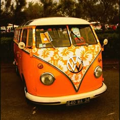

What is the fashion in the 60s ?
Broadly categorized, there were three main trends in 1960s womenswear: 1 the lady-like elegance inherited from the previous decade seen on the likes of First Lady Jacqueline Kennedy, 2) the fun, youthful designs popularized by Swinging London, and 3) the Eastern-influenced hippie styles of the late 1960s. Along with these diverse styles, there came a shift in the way that women shopped and for whom the styles were created.
In the early years of the decade, fashion continued along the lines of the 1950s. Skirt suits and coordinating accessories were emphasized as one decade transitioned into the next.While the miniskirt reached its height mid-decade, by the late 1960s, a new style and culture was emerging. Skirts dipped back to mid-calf and by 1969, the full-length maxi-skirt had emerged . This came with the move towards the “hippie” aesthetic. Elizabeth Wilson writes in Gerta Buxbaum’s Icons of Fashion: The Twentieth Century, “Between 1965 and 1967, the uncluttered, futuristic design of André Courrèges and Mary Quant – featuring short skirts, childish pinafores, and boxy shapes – were superseded by a return to the styles of Art Nouveau, Hollywood, and William Morris” (98). Suede, headbands, kaftans, Afghan coats, beads and other non-Western elements of adornment were embraced as were flowing skirts and secondhand clothing (Laver 267-268). Janis Joplin, embraced this style in the late 1960s.
Both the “Mod” movement, to which Quant contributed, and the hippie movement were part of a new model of “street style” in which fashion is disseminated from the streets up to the designers rather than vice versa. Jane Mulvagh writes in Icons of Fashion, “1962 to 1968 were crucial years in which the allure and originality of street style challenged, and finally broke, the hegemony of high fashion” (86). The trajectory of fashion in the 1960s saw three very diverse overarching styles but also a shift from a designer-centric fashion ecosystem to one where the consumer was at the center of creation.

